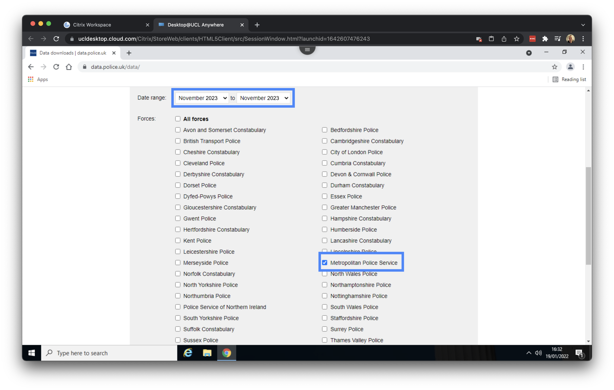
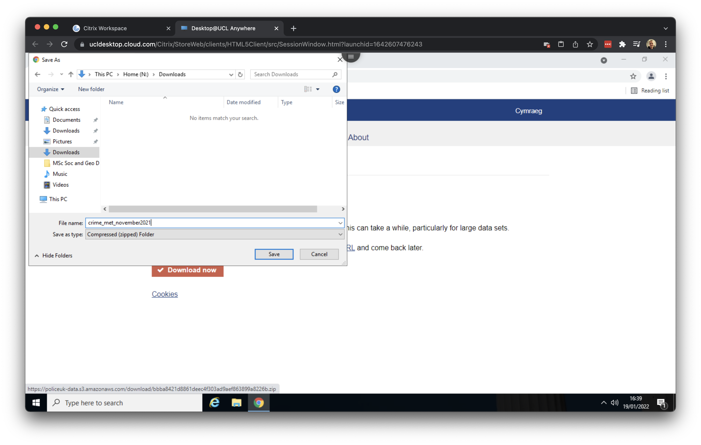
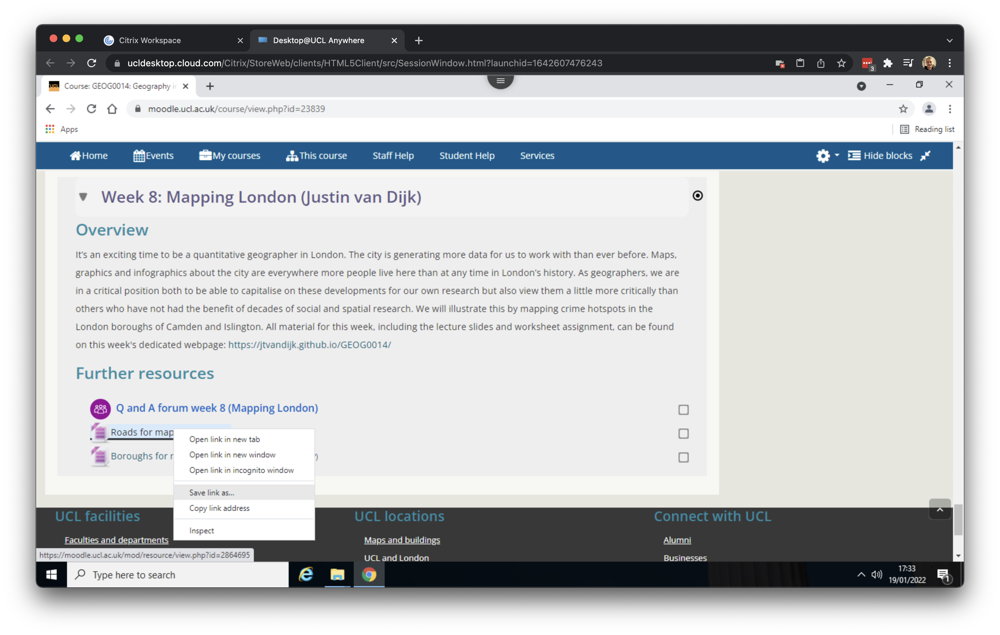
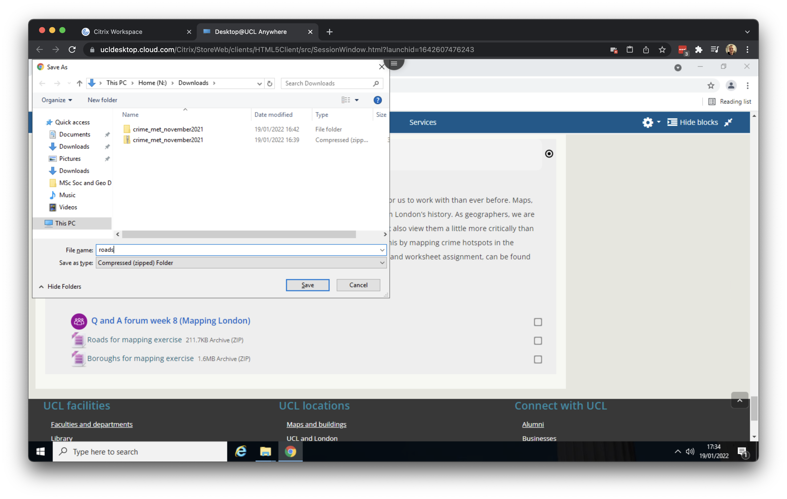

0 Data preparation
This week we will be mapping crime hotspots in the London boroughs of Camden and Islington. The data we will be working with for this week’s task are downloaded from the data.police.uk website.
You are expected to work through the following computer tutorial individually, but you will submit this week’s worksheet as a group.
0.1 Getting started
Some of you may already have played around with some GIS software such as ArcGIS or at very least have been introduced to ArcGIS Online in Geography in the Field 1, but today we will be using the open-source GIS software suite QGIS.
QGIS is an open-source graphic user interface GIS with many community developed add-on packages that provide additional functionality to the software. A copy of QGIS can be accessed through the UCL Application Store on all cluster room computers as well as on Desktop@UCL Anywhere.
Let us get started by opening an internet browser such as Google Chrome or Microsoft Edge. Navigate to: https://ucldesktop.cloud.com.
You can log in with your normal UCL username and UCL password. After this, you click on the Desktop@UCL Anywhere icon to start the service:

It may take a few minutes to load, but after this you should see your normal UCL Windows desktop:

0.2 Crime data
For our crime data, we will use data directly from the Police Data Portal, which you can find at data.police.uk. This Data Portal allows you to access and generate tabular data for crime recorded in the UK across different the different police forces.
There are a total of 45 territorial police forces (TPFs) and 3 special police forces (SPFs) in the UK. Each TPF covers a specific geographic area, such as the West Midlands Police, while SPFs have cross-jurisdictional authority and focus on specific types of crime, like the British Transport Police. Therefore, when downloading data for a particular area, it is important to identify which police force is responsible for that region.
When you look to download crime data for London, for example, there are two territorial police forces working within the city and its greater metropolitan area:
- The Metropolitan Police Force, which covers nearly the entire London area, including Greater London
- The City of London Police, which covers the City of London. The Met has no jurisdiction in the City of London.
Today we will leave the City of London for what it is because we will look at crime hotspots in the London boroughs of Camden and Islington, both of which are not part of the City of London. To download our data, open Google Chrome (within your Desktop@UCL environment) and navigate to data.police.uk.
You are free to use a different browser, however, some the steps below on how to download the files may be slightly different.

Click on Downloads and subsequently select November 2023 to November 2023 as data range and tick the box for the Metropolitan Police Services. With this selection we can now download all crime data recorded by the Metropolitan Police Services for the month of November 2023

Make sure that the box in front of Include crime data is ticked and proceed to click on Generate file. Once your file is generated you can click on Download now.

Save the file as crime_met_november2023 in your Downloads folder.

Your download should be finished within seconds. After downloading the data, go to your Downloads folder and right click on the crime_met_november2023.zip folder and click on Extract All. The data, which is in a compressed format (zip), will now be extracted so that we can use it within QGIS later on.

0.3 Reference data
Now we have downloaded the crime data, we need to download some background and reference data. Two data sets are available on Moodle: the boundaries of the boroughs in London as well as the London road network. Within your UCL Desktop environment, navigate to the Geography in the Field II Moodle page and scroll down to Week 08: Mapping London.

Under the Further resources heading you will see two files: Roads for mapping exercise and Boroughs for mapping exercise. Right click on on the first file and click on Save link as …. Give the file the name roads and save to your download folder.


Right click on on the second file and click on Save link as …. Give the file the name boroughs and save to your download folder.
After downloading both files, go to your Downloads folder and make sure both are extracted. Your Downloads folder should look something like this:

The final step we need to take is to copy our downloaded data to a new folder. In your Documents folder, create a new folder GEOG0014_W08. We will use this folder as our working directory. Now move the three folders containg the crime data, borough data and road data that you unzipped from your Downloads folder to this new GEOG0014_W08 folder. Your working directory should look something like this:

The roads and boroughs file that we downloaded is something called a shapefile. A shapefile is a file that GIS software uses to store spatial data. In the case of a shapefile this is in actual fact a misnomer because a shapefile consists of a collection of files. Without going into detail: each of these files does something slightly different and the the software we will be using requires needs all of them in order to understand the data.
While shapefiles are still widely used and many online spatial files are available in this format, they are somewhat outdated. A more modern alternative is the GeoPackage format, and we recommend using a GeoPackage whenever possible.
We now have all the datasets we need and are ready to move on to QGIS to create some maps.